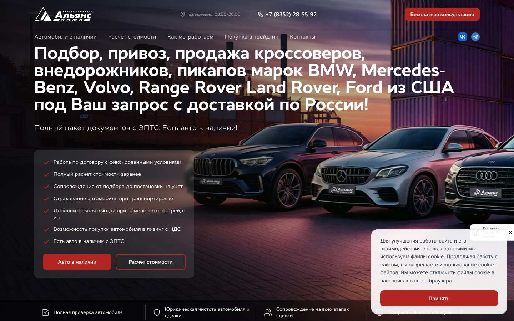
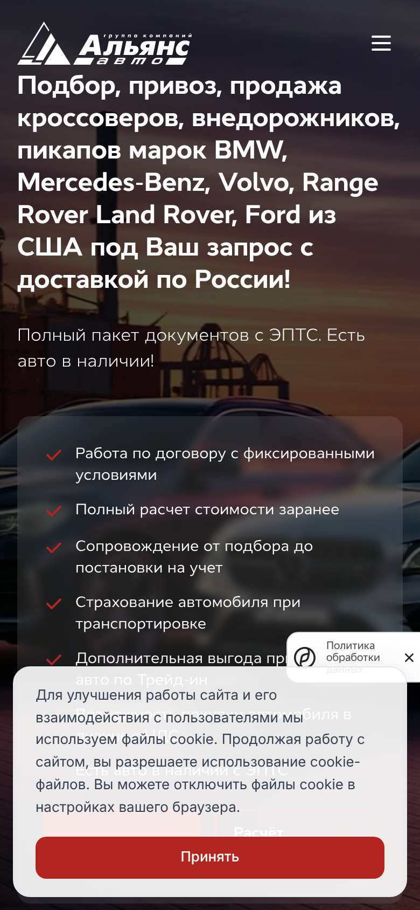
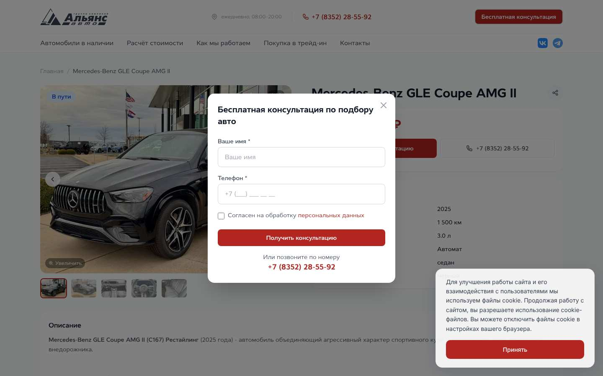
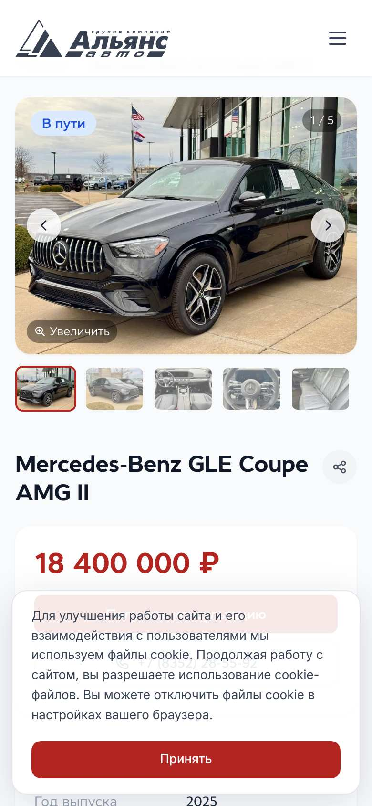
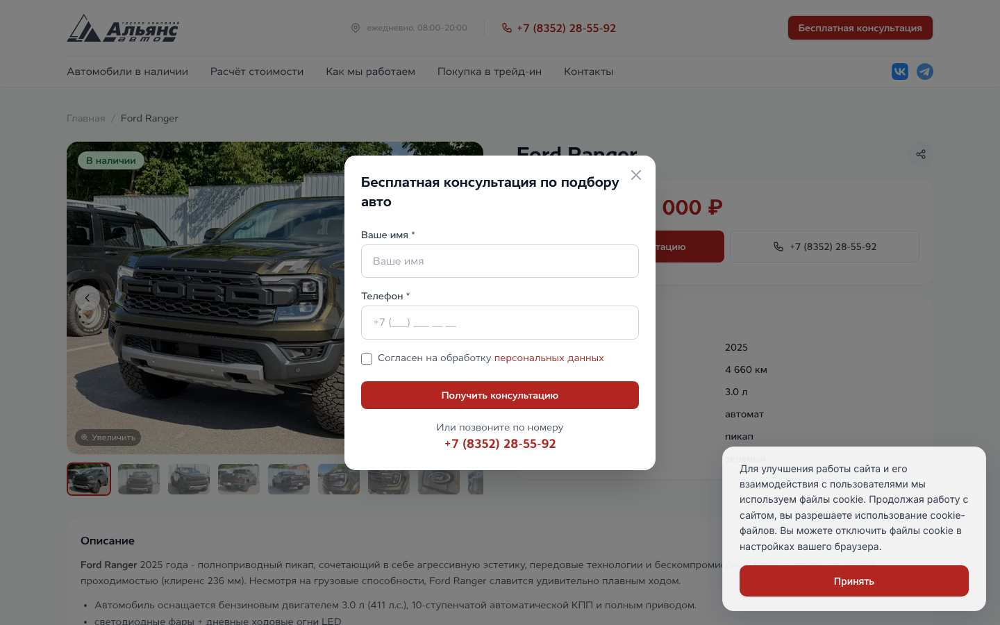
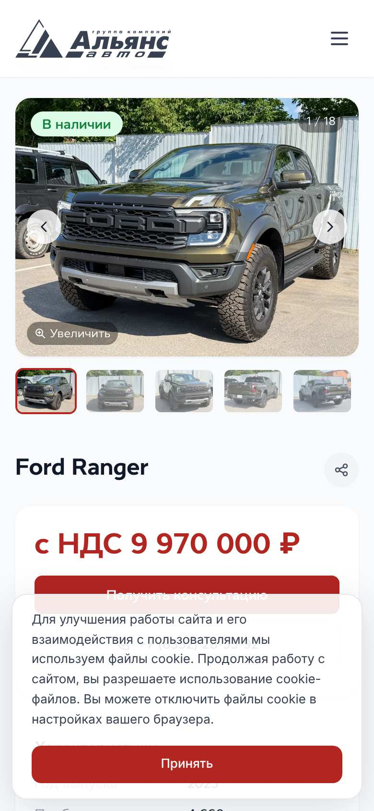

Альянс-Авто: авто из США
Итог по направлениям
Индекс = 100 − штрафы за найденные проблемы (с учётом влияния и уверенности). Нужен для отслеживания динамики между прогонами, а не как абсолютная оценка.
Топ-10 рекомендаций
| Приор. | Что сделать | Направление | I·E·C |
|---|---|---|---|
| P0 | На мобильном всплывающие слои закрывают 26% первого экрана Сделать cookie-уведомление компактной полосой (1–2 строки) внизу, не показывать одновременно несколько виджетов. Сейчас они перекрывают кнопки и предложение при первом входе. |
Конверсия | 4·5·0.7 = 14.0 |
| P0 | В мобильной версии телефона нет на первом экране Добавить иконку звонка в шапку или закреплённую кнопку «Позвонить». Есть у конкурентов: Chery Центр (АТК Моторс), Тойота Центр Чебоксары. |
Конверсия | 4·4·0.8 = 13.6 |
| P0 | sitemap.xml пустой (0 страниц этого сайта) Генерировать sitemap автоматически: главная, каталог, все карточки авто в наличии, модели, акции. Без него новые авто дольше попадают в поиск. |
SEO и видимость | 4·4·0.8 = 13.6 |
| P0 | На первом экране мобильной версии нет кнопки заявки Вынести главную кнопку в первый экран или сделать закреплённую нижнюю панель (Позвонить / Написать / Заявка). Есть у конкурентов: ТТС Чебоксары. |
Конверсия | 4·4·0.8 = 12.8 |
| P0 | Нет H1: 2 стр. Один H1 на страницу с главным ключом (модель/категория + город). |
SEO и видимость | 3·5·0.8 = 12.0 |
| P1 | В мобильной карточке авто кнопка заявки не видна без прокрутки Закрепить панель «Цена · Кнопка заявки» внизу экрана карточки на мобильном. |
Конверсия | 4·4·0.7 = 10.4 |
| P1 | Нет кредитного калькулятора (ежемесячный платёж) Добавить калькулятор платежа на главную/карточку/страницу кредита с кнопкой «Получить одобрение». Около половины новых авто в РФ покупают в кредит. Есть у конкурентов: Chery Центр (АТК Моторс), Тойота Центр Чебоксары. |
Конверсия | 4·3·0.8 = 9.6 |
| P1 | Нет закреплённой кнопки связи на мобильном Закреплённая панель «Позвонить / WhatsApp / Telegram» на мобильном: телефон и мессенджер всегда в зоне большого пальца. Есть у конкурентов: Chery Центр (АТК Моторс). |
Конверсия | 3·4·0.8 = 9.0 |
| P1 | Одинаковые title у разных страниц: 1 групп Сделать title уникальными (шаблон для карточек: «Марка Модель Год — купить в <город>, цена X ₽»). |
SEO и видимость | 3·4·0.8 = 9.0 |
| P1 | Длинные формы заявки: до 7 полей Оставить 2 поля (имя, телефон); остальное менеджер уточнит в звонке. Каждое лишнее поле снижает конверсию формы. |
Конверсия | 3·4·0.7 = 8.4 |
Приоритет по ICE: Impact (влияние на заявки, 1–5) × Ease (лёгкость внедрения, 1–5) × Confidence (уверенность агента, 0–1). P0 ≥ 12 — делать в первую очередь; P1 ≥ 7; P2 — бэклог.
Конверсия · 8
P0 На мобильном всплывающие слои закрывают 26% первого экрана
- скриншот: shots/home_mobile.jpg
- слой: «Для улучшения работы сайта и его взаимодействия с пользователями мы используем ф»
- слой: «Политика обработки данных»
P0 В мобильной версии телефона нет на первом экране
P0 На первом экране мобильной версии нет кнопки заявки
P1 В мобильной карточке авто кнопка заявки не видна без прокрутки


P1 Нет кредитного калькулятора (ежемесячный платёж)
P1 Нет закреплённой кнопки связи на мобильном
P1 Длинные формы заявки: до 7 полей
P2 Нет онлайн-чата / виджета обратного звонка
Карточки автомобилей · 2
| Авто | Цена | Фото | Наличие | Характ. | Кнопка | Полнота |
|---|---|---|---|---|---|---|
| Mercedes-Benz GLE Coupe AMG II | 18 400 000 ₽ | 22 | в наличии | 6 | ✓ | 100% |
| Ford Ranger | 9 970 000 ₽ | 35 | в наличии | 8 | ✓ | 100% |
| BMW X5 xDrive40i | 17 050 000 ₽ | 34 | в наличии | 8 | ✓ | 100% |
| Mercedes-Benz Mercedes-Benz GLE 63 AMG (V167) | 19 184 000 ₽ | 8 | в наличии | 7 | ✓ | 100% |
| Mercedes-Benz GLS 450 (X167) | 17 850 000 ₽ | 10 | в наличии | 7 | ✓ | 100% |
| BMW X5 xDrive40i (G05 LCI) | 12 782 000 ₽ | 9 | в наличии | 8 | ✓ | 100% |
| Land Rover Range Rover Sport | 17 510 000 ₽ | 9 | в наличии | 7 | ✓ | 100% |
Выборка: 7 карточек; средняя полнота 100%. Полнота = фото ≥5, цена, ≥3 характеристики, статус наличия, год, кнопка заявки.
P2 В карточках авто с пробегом/импорта нет VIN или отчёта об истории
P2 Карточки заполнены неравномерно: от 8 до 35 фото
Техническое состояние · 4
| Страница (mobile, Slow 4G, CPU×4) | TTFB | FCP | LCP | CLS | Вес | Запросов |
|---|---|---|---|---|---|---|
| https://autoimport.alyans-auto.ru/ | 0.48 с | 1.2 с | 1.2 с | 0.027 | 4.55 МБ | 77 |
| https://autoimport.alyans-auto.ru/cars/mercedes-benz-gle-coupe-amg-ii-2025 | 0.4 с | 1.36 с | 3.97 с | 0 | 1.17 МБ | 67 |
| https://autoimport.alyans-auto.ru/cars | 0.42 с | 1.53 с | 1.53 с | 0.027 | 1.4 МБ | 34 |
Лабораторный замер в headless Chromium (аналог Lighthouse mobile). Нормы Google/Яндекса: LCP ≤ 2,5 с, CLS ≤ 0,1.
P1 JS-исключения на страницах с формами заявок
P2 Необработанные JS-исключения: 3 видов
- JS exception: Minified React error #418; visit https://reactjs.org/docs/error-decoder.html?invariant=418 for the full message or use the non-minified dev enviro — https://autoimport.alyans-auto.ru/
- JS exception: Minified React error #423; visit https://reactjs.org/docs/error-decoder.html?invariant=423 for the full message or use the non-minified dev enviro — https://autoimport.alyans-auto.ru/
- JS exception: Uncaught (in promise) undefined — https://autoimport.alyans-auto.ru/cars
P2 Загрузка на мобильном ниже нормы: LCP 3.97 с
P2 Ошибки в консоли браузера: 7 видов
- (Yandex Maps JS API): api is already enabled on this page with same namespace. — https://autoimport.alyans-auto.ru/
- Access to XMLHttpRequest at 'https://mod.calltouch.ru/set_external_data.php' from origin 'https://autoimport.alyans-auto.ru' has been blocked by CORS policy: Re — https://autoimport.alyans-auto.ru/cars
- Calltouch global cookie error: null — https://autoimport.alyans-auto.ru/cars
- TypeError: Failed to fetch dynamically imported module: https://autoimport.alyans-auto.ru/_nuxt/C2GGmK9t.js — https://autoimport.alyans-auto.ru/cars/mercedes-benz-gle-coupe-amg-ii-2025
SEO и видимость · 9
Позиции в Яндексе не проверялись: задайте YANDEX_SEARCH_API_KEY и YANDEX_FOLDER_ID (Yandex Cloud Search API) — агент добавит таблицу позиций по целевым запросам для сайта и конкурентов.
P0 sitemap.xml пустой (0 страниц этого сайта)
P0 Нет H1: 2 стр.
P1 Одинаковые title у разных страниц: 1 групп
- «Альянс-Авто — Автомобили из США под заказ с доставкой по РФ»
P2 Title слишком короткий/длинный: 7 стр.
- https://autoimport.alyans-auto.ru/cars/mercedes-benz-gle-coupe-amg-ii-2025 — «Mercedes-Benz GLE Coupe AMG II 2025 - Альянс-АвтоМаркет - Автомобили из США под заказ с до» (103)
- https://autoimport.alyans-auto.ru/cars/ford-ranger-2025 — «Ford Ranger 2025 - Альянс-АвтоМаркет - Автомобили из США под заказ с доставкой по РФ» (84)
- https://autoimport.alyans-auto.ru/cars/bmw-x5-2025 — «BMW X5 xDrive40i 2025 - Альянс-АвтоМаркет - Автомобили из США под заказ с доставкой по РФ» (89)
- https://autoimport.alyans-auto.ru/cars/mercedes-benz-mercedes-benz-gle-63-amg-v167-2026 — «Mercedes-Benz Mercedes-Benz GLE 63 AMG (V167) 2026 - Альянс-АвтоМаркет - Автомобили из США» (118)
P2 Нет разметки Organization/AutoDealer на главной
P2 В карточках авто нет микроразметки Car/Product/Offer
P2 Одинаковые description: 1 групп
- «Подбор и доставка автомобилей из США под ключ. Прозрачные условия, юридическая ч»
P2 Нет Open Graph-разметки
P2 В robots.txt нет Clean-param для UTM-меток
Конкуренты · 1
| Возможность | Мы | ТТС Чебоксары | Chery Центр (АТК Моторс) | Тойота Центр Чебоксары |
|---|---|---|---|---|
| Кликабельный телефон | ✓ | ✓ | ✓ | ✓ |
| Телефон в первом экране на мобильном | ✗ | ✗ | ✓ | ✓ |
| Кнопка заявки в первом экране на мобильном | ✗ | ✓ | ✗ | ✗ |
| Закреплённая кнопка связи на мобильном | ✗ | ✗ | ✓ | ✗ |
| Мессенджеры (WhatsApp/Telegram/MAX) | ✓ | ✓ | ✓ | ✗ |
| Онлайн-чат / обратный звонок | ✗ | ✓ | ✗ | ✗ |
| Кредитный калькулятор | ✗ | ✗ | ✓ | ✓ |
| Трейд-ин на сайте | ✓ | ✓ | ✓ | ✓ |
| Онлайн-оценка авто для трейд-ин | ✓ | ✓ | ✗ | ✓ |
| Запись на тест-драйв | ✗ | ✓ | ✓ | ✓ |
| Онлайн-бронирование / покупка | ✗ | ✗ | ✓ | ✗ |
| Авто в наличии с ценами | ✓ | ✓ | ✓ | ✗ |
| Спецпредложения и акции | ✓ | ✓ | ✓ | ✗ |
| Отзывы клиентов на сайте | ✓ | ✗ | ✗ | ✓ |
| Формы заявки на страницах | ✓ | ✓ | ✓ | ✓ |
| Скорость, LCP mobile (с) | 1.2 | 13.76 | 13.35 | 14.84 |
Наши преимущества (нет ни у одного конкурента): скорость загрузки (LCP 1.2 с против 13.35 с у лучшего конкурента).
P2 У конкурентов есть, у вас нет: онлайн-бронирование / покупка
Скриншоты











Проверенные страницы
10 страниц
Сгенерировано агентом dealer-site-audit v0.1.0. Агент собирает факты автоматически (браузер Chromium, HTTP-проверки, sitemap), правила дают находки с доказательствами, LLM (если подключён) разбирает скриншоты и сводит находки в план. Ограничения: формы не отправляются без флага --test-forms; поведение посетителей (Метрика, CRM) агенту недоступно — после подключения выгрузок приоритеты можно калибровать по реальной конверсии.